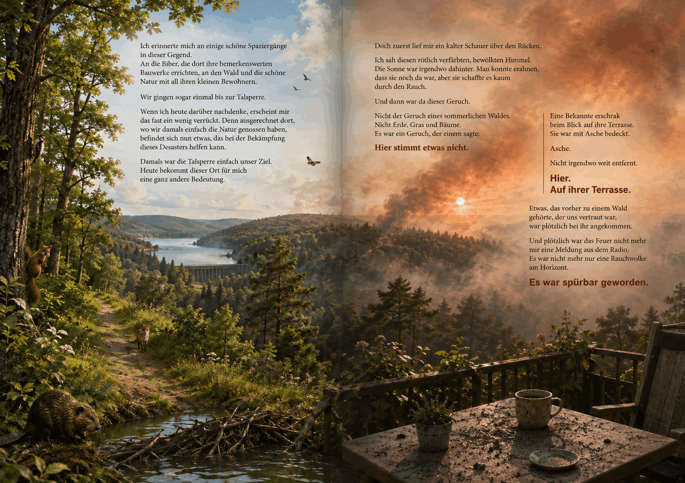
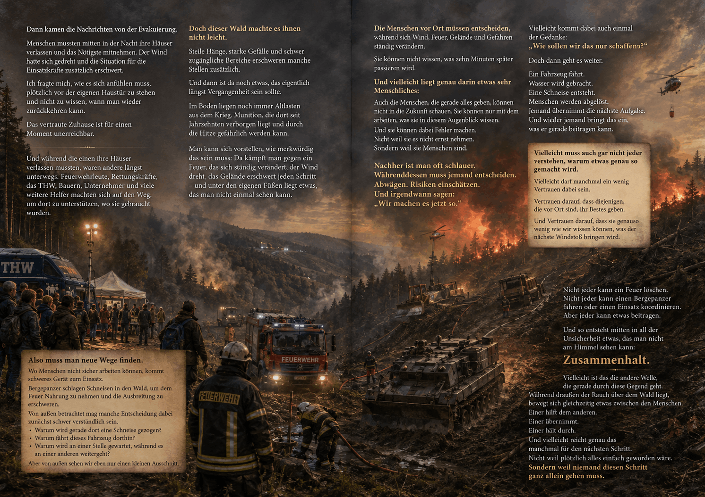
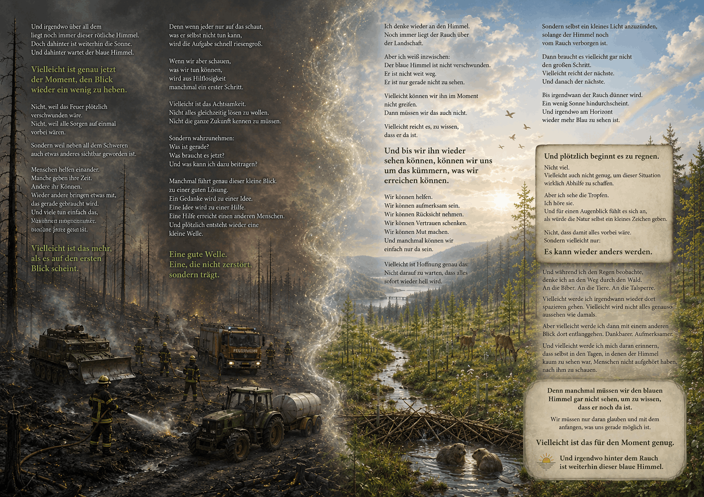

No Code Website BuilderEine Gedankenreise zum Verschenken

Der vertraute Wald
Ich erinnerte mich an einige schöne Spaziergänge in dieser Gegend.
An die Biber, die dort ihre bemerkenswerten Bauwerke errichten,
an den Wald und die schöne Natur mit all ihren kleinen Bewohnern.
Wir gingen sogar einmal bis zur Talsperre.
Wenn ich heute darüber nachdenke, erscheint mir das fast ein wenig verrückt.
Denn ausgerechnet dort, wo wir damals einfach die Natur genossen haben,
befindet sich nun etwas, das bei der Bekämpfung dieses Desasters helfen kann.
Damals war die Talsperre einfach unser Ziel.
Heute bekommt dieser Ort für mich eine ganz andere Bedeutung.
Doch zuerst lief mir ein kalter Schauer über den Rücken.
Ich sah diesen rötlich verfärbten, bewölkten Himmel.
Die Sonne war irgendwo dahinter.
Man konnte erahnen, dass sie noch da war,
aber sie schaffte es kaum durch den Rauch.
Und dann war da dieser Geruch.
Nicht der Geruch eines sommerlichen Waldes.
Nicht Erde, Gras und Bäume.
Es war ein Geruch, der einem sagte:
Hier stimmt etwas nicht.
Eine Bekannte erschrak beim Blick auf ihre Terrasse.
Sie war mit Asche bedeckt.
Asche
Nicht irgendwo weit entfernt.
Hier
Auf ihrer Terrasse.
Etwas, das vorher zu einem Wald gehörte,
der uns vertraut war, war plötzlich bei ihr angekommen.
Und plötzlich war das Feuer nicht mehr nur eine Meldung aus dem Radio.
Es war nicht mehr nur eine Rauchwolke am Horizont.
Es war spürbar geworden.

Wenn der Rauch näher kommt
Dann kamen die Nachrichten von der Evakuierung.
Menschen mussten mitten in der Nacht ihre Häuser verlassen und das Nötigste mitnehmen.
Der Wind hatte sich gedreht und die Situation für die Einsatzkräfte zusätzlich erschwert.
Ich fragte mich,-wie es sich anfühlen muss,
plötzlich vor der eigenen Haustür zu stehen und nicht zu wissen,
wann man wieder zurückkehren kann.
Das vertraute Zuhause ist für einen Moment unerreichbar.
Und während die einen ihre Häuser verlassen mussten,
waren andere längst unterwegs.
Feuerwehrleute, Rettungskräfte, das THW,
Bauern, Unternehmer und viele weitere Helfer machten sich auf den Weg,
um dort zu unterstützen, wo sie gebraucht wurden.
Doch dieser Wald machte es ihnen nicht leicht.
Steile Hänge, starke Gefälle und schwer zugängliche Bereiche,
erschweren manche Stellen zusätzlich.
Und dann ist da noch etwas,
das eigentlich längst Vergangenheit sein sollte.
Im Boden liegen noch immer Altlasten aus dem Krieg.
Munition, die dort seit Jahrzehnten verborgen liegt
und durch die Hitze gefährlich werden kann.
Man kann sich vorstellen, wie merkwürdig das sein muss:
Da kämpft man gegen ein Feuer,
das sich ständig verändert,
der Wind dreht,
das Gelände erschwert jeden Schritt
und unter den eigenen Füßen liegt etwas,
das man nicht einmal sehen kann.
Also muss man neue Wege finden.
Wo Menschen nicht sicher arbeiten können,
kommt schweres Gerät zum Einsatz.
Bergepanzer schlagen Schneisen in den Wald,
um dem Feuer Nahrung zu nehmen und die Ausbreitung zu erschweren.
Von außen betrachtet mag manche Entscheidung dabei zunächst schwer verständlich sein.
Warum wird gerade dort eine Schneise gezogen?
Warum fährt dieses Fahrzeug dorthin?
Warum wird an einer Stelle gewartet, während es an einer anderen weitergeht?
Aber von außen sehen wir eben nur einen kleinen Ausschnitt.
Die Menschen vor Ort müssen entscheiden,
während sich Wind, Feuer, Gelände und Gefahren ständig verändern.
Sie können nicht wissen, was zehn Minuten später passieren wird.
Und vielleicht liegt genau darin etwas sehr Menschliches:
Auch die Menschen,
die gerade alles geben,
können nicht in die Zukunft schauen.
Sie können nur mit dem arbeiten,
was sie in diesem Augenblick wissen.
Und sie können dabei Fehler machen.
Nicht weil sie es nicht ernst nehmen.
Sondern weil sie Menschen sind.
Nachher ist man oft schlauer.
Währenddessen muss jemand entscheiden.
Abwägen.
Risiken einschätzen.
Und irgendwann sagen:
„Wir machen es jetzt so.“
Vielleicht kommt dabei auch einmal der Gedanke:
„Wie sollen wir das nur schaffen?“
Doch dann geht es weiter.
Ein Fahrzeug fährt.
Wasser wird gebracht.
Eine Schneise entsteht.
Menschen werden abgelöst.
Jemand übernimmt die nächste Aufgabe.
Und wieder jemand bringt das ein, was er gerade beitragen kann.
Vielleicht muss auch gar nicht jeder verstehen,
warum etwas genau so gemacht wird.
Vielleicht darf manchmal ein wenig Vertrauen dabei sein.
Vertrauen darauf, dass diejenigen,
die vor Ort sind, ihr Bestes geben.
Und Vertrauen darauf,
dass sie genauso wenig wie wir wissen können,
was der nächste Windstoß bringen wird.
Nicht jeder kann ein Feuer löschen.
Nicht jeder kann einen Bergepanzer fahren
oder einen Einsatz koordinieren.
Aber jeder kann etwas beitragen.
Und so entsteht mitten in all der Unsicherheit etwas,
das man nicht am Himmel sehen kann:
Zusammenhalt.
Vielleicht ist das die andere Welle,
die gerade durch diese Gegend geht.
Während draußen der Rauch über dem Wald liegt,
bewegt sich gleichzeitig etwas zwischen den Menschen.
Einer hilft dem anderen.
Einer übernimmt.
Einer hält durch.
Und vielleicht reicht genau das manchmal für den nächsten Schritt.
Nicht weil plötzlich alles einfach geworden wäre.
Sondern weil niemand diesen Schritt ganz allein gehen muss.

Der Himmel hinter dem Rauch
Und irgendwo über all dem liegt noch immer dieser rötliche Himmel.
Doch dahinter ist weiterhin die Sonne.
Und dahinter wartet der blaue Himmel.
Vielleicht ist genau jetzt der Moment, den Blick wieder ein wenig zu heben.
Nicht, weil das Feuer plötzlich verschwunden wäre.
Nicht, weil alle Sorgen auf einmal vorbei wären.
Sondern weil neben all dem Schweren auch etwas anderes sichtbar geworden ist.
Menschen helfen einander.
Manche geben ihre Zeit.
Andere ihr Können.
Wieder andere bringen etwas mit, das gerade gebraucht wird.
Und viele tun einfach das, was ihnen möglich ist.
Vielleicht ist das mehr, als es auf den ersten Blick scheint.
Denn wenn jeder nur auf das schaut,
was er selbst nicht tun kann,
wird die Aufgabe schnell riesengroß.
Wenn wir aber schauen,
was wir tun können,
wird aus Hilflosigkeit
manchmal ein erster Schritt.
Vielleicht ist das Achtsamkeit.
Nicht alles gleichzeitig lösen zu wollen.
Nicht die ganze Zukunft kennen zu müssen.
Sondern wahrzunehmen:
Was ist gerade?
Was braucht es jetzt?
Und was kann ich dazu beitragen?
Manchmal führt genau dieser kleine Blick,
zu einer guten Lösung.
Ein Gedanke wird zu einer Idee.
Eine Idee wird zu einer Hilfe.
Eine Hilfe erreicht einen anderen Menschen.
Und plötzlich entsteht wieder eine kleine Welle.
Eine gute Welle.
Eine, die nicht zerstört, sondern trägt.
Ich denke wieder an den Himmel.
Noch immer liegt der Rauch über der Landschaft.
Aber ich weiß inzwischen:
Der blaue Himmel ist nicht verschwunden.
Er ist nicht weit weg.
Er ist nur gerade nicht zu sehen.
Vielleicht können wir ihn im Moment nicht greifen.
Dann müssen wir das auch nicht.
Vielleicht reicht es, zu wissen, dass er da ist.
Und bis wir ihn wieder sehen können,
können wir uns um das kümmern,
was wir erreichen können.
Wir können helfen.
Wir können aufmerksam sein.
Wir können Rücksicht nehmen.
Wir können Vertrauen schenken.
Wir können Mut machen.
Und manchmal können wir einfach nur da sein.
Vielleicht ist Hoffnung genau das:
Nicht darauf zu warten, dass alles sofort wieder hell wird.
Sondern selbst ein kleines Licht anzuzünden,
solange der Himmel noch vom Rauch verborgen ist.
Dann braucht es vielleicht gar nicht den großen Schritt.
Vielleicht reicht der nächste.
Und danach der nächste.
Bis irgendwann der Rauch dünner wird.
Ein wenig Sonne hindurchscheint.
Und irgendwo am Horizont wieder mehr Blau zu sehen ist.
Und plötzlich beginnt es zu regnen.
Nicht viel.
Vielleicht auch nicht genug, um dieser Situation wirklich Abhilfe zu schaffen.
Aber ich sehe die Tropfen.
Ich höre sie.
Und für einen Augenblick fühlt es sich an,
als würde die Natur selbst ein kleines Zeichen geben.
Nicht, dass damit alles vorbei wäre.
Sondern vielleicht nur:
Es kann wieder anders werden.
Und während ich den Regen beobachte,
denke ich an den Weg durch den Wald.
An die Biber.
An die Tiere.
An die Talsperre.
Vielleicht werde ich irgendwann wieder dort spazieren gehen.
Vielleicht wird nicht alles genauso aussehen wie damals.
Aber vielleicht werde ich dann mit einem anderen Blick dort entlanggehen.
Dankbarer.
Aufmerksamer.
Und vielleicht werde ich mich daran erinnern,
dass selbst in den Tagen,
in denen der Himmel kaum zu sehen war,
Menschen nicht aufgehört haben,
nach ihm zu schauen.
Denn manchmal müssen wir den blauen Himmel gar nicht sehen,
um zu wissen, dass er noch da ist.
Wir müssen nur daran glauben
und mit dem anfangen,
was uns gerade möglich ist.
Vielleicht ist das für den Moment genug.
🌤️ Und irgendwo hinter dem Rauch ist weiterhin dieser blaue Himmel.
Manchmal zieht etwas über unser Leben hinweg, das wir nicht aufhalten können.
Es kann Angst machen, uns verunsichern und uns den Blick auf das nehmen, was eigentlich noch da ist.
Der blaue Himmel ist dabei für mich ein Bild für die Hoffnung.
Er verschwindet nicht, nur weil wir ihn gerade nicht sehen können.
Vielleicht können wir den Rauch nicht vertreiben und nicht bestimmen, wann er sich verzieht.
Aber wir können entscheiden, was wir in der Zwischenzeit tun.
Aufmerksam sein.
Mut fassen.
Helfen, wo wir helfen können.
Vertrauen, wo wir nicht alles selbst beurteilen können.
Und gemeinsam den nächsten Schritt gehen.
Denn manchmal ist genau das alles, was uns möglich ist.
Und vielleicht ist es auch genau das, was wir brauchen.
Diese Gedankenreise entstand mitten in den Tagen des Waldbrandes im Hürtgenwald.
Der rötlich verfärbte Himmel,
der Rauchgeruch und die Asche,
die plötzlich bis auf Terrassen in unserer Umgebung gelangte,
machten aus einer Nachricht etwas,
das sich ganz unmittelbar anfühlte.
Dazu kamen die Nachrichten über die Evakuierung von Gey,
die vielen Einsatzkräfte, die schwierigen Bedingungen und die Menschen,
die ihre eigenen Pläne zurückstellten, um Rücksicht zu nehmen oder anderen zu helfen.
Während ich darüber nachdachte, erinnerte ich mich an frühere Spaziergänge durch diese Gegend.
An den Wald.
Die Tiere.
Die Biber.
Die Talsperre.
Und plötzlich entstand dieses Bild:
Der Himmel ist noch da.
Nur der Rauch steht dazwischen.
Vielleicht ist das auch im Leben manchmal so.
Wir sehen gerade nicht, wie es weitergehen soll.
Aber deshalb bedeutet das nicht, dass es keinen Weg mehr gibt.
Wir können vielleicht nicht den ganzen Weg sehen.
Aber wir können den nächsten Schritt gehen.
Vielleicht müssen wir nicht immer wissen, wie alles ausgehen wird.
Vielleicht reicht es manchmal,
aufmerksam zu bleiben und mit dem zu beginnen,
was uns gerade möglich ist.
Denn auch wenn der Himmel vom Rauch verborgen ist:
Er ist nicht verschwunden.
No Code Website Builder